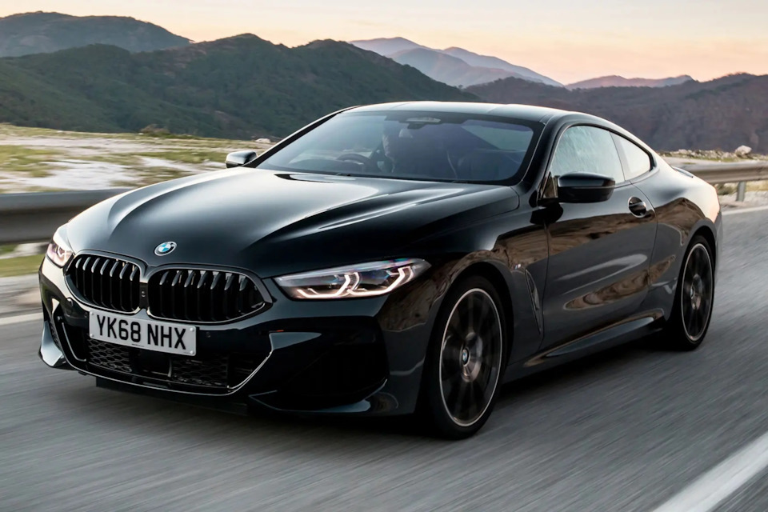
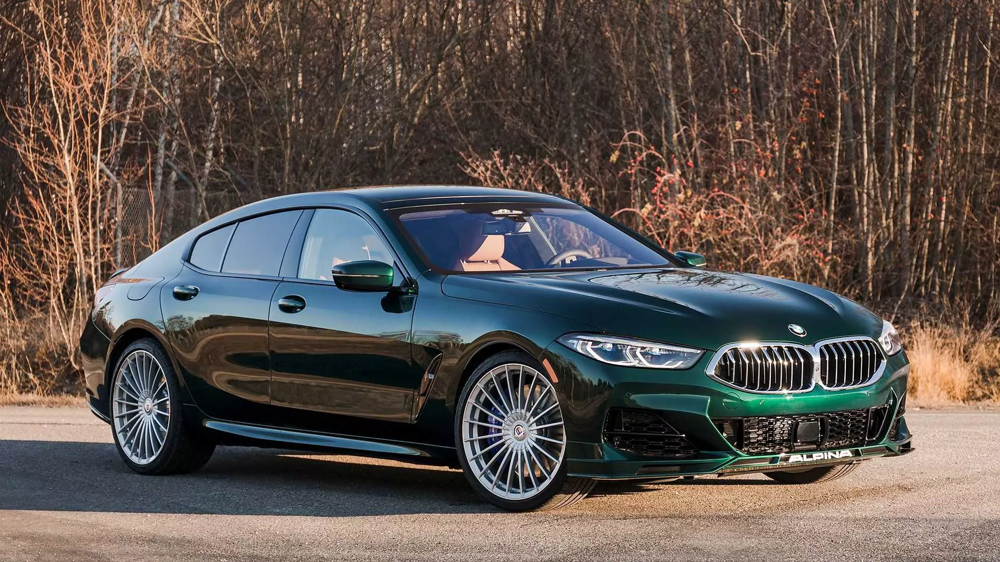
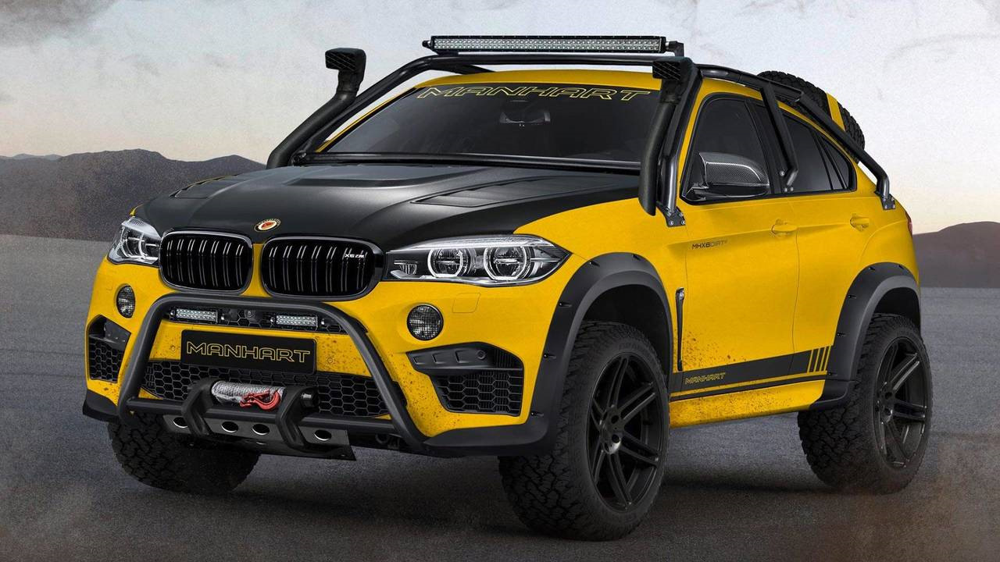

1 Первая модель компании — BMW 3/15 PS. 12 Она сошла с конвейера в 1930 году на базе автомобиля Dixi Austin 7. Мощность двигателя первой модели BMW составляла 20 л. с., а её максимальная скорость достигала 80 км/ч.

2 BMW X2 M35i. Кросс-купе второго поколения в топовой версии с полным приводом можно купить в России.
BMW M340i. В конце 2025 года BMW представит обновлённую версию спортивного седана M340i, главные изменения коснутся двигателя.
BMW 2-Series 2025. Автомобиль с увеличенной колёсной базой выйдет на рынок в январе 2025 года.

3 BMW — это болезнь, от которой лечиться не хочется.
У BMW есть душа, которая говорит: «Медленно ехать нельзя».
Сердце девушки легче всего открывается ключами от BMW!
BMW — это не только средство передвижения, это стиль жизни, почёт и уважение
